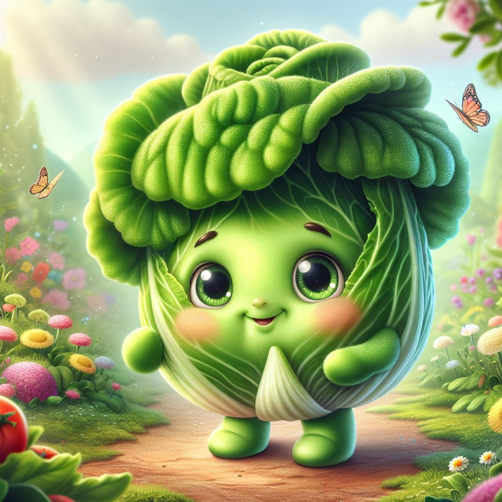

Adolescencia
Como toda lechuga adolescente, Lettuce pasó por una fase rebelde. Quería más espacio, más nutrientes y más sol. Se enfrentó a los insectos del huerto, rechazó el fertilizante y hasta tuvo un romance fugaz con un rábano silvestre. Pero también fue una etapa de autodescubrimiento: aprendió a aprovechar cada gota de agua y a endurecer sus raíces. El viento la golpeaba, pero ella seguía creciendo más fuerte que nunca.